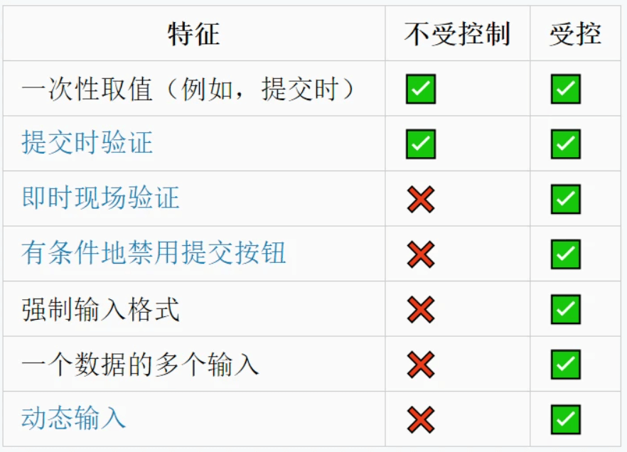

说说对受控组件和非受控组件的理解，以及应用场景？
参考答案
一、受控组件
受控组件，简单来讲，就是受我们控制的组件，组件的状态全程响应外部数据
举个简单的例子：
class TestComponent extends React.Component {
constructor (props) {
super(props);
this.state = { username: 'lindaidai' };
}
render () {
return <input name="username" value={this.state.username} />
}
}这时候当我们在输入框输入内容的时候，会发现输入的内容并无法显示出来，也就是input标签是一个可读的状态
这是因为value被this.state.username所控制住。当用户输入新的内容时，this.state.username并不会自动更新，这样的话input内的内容也就不会变了
如果想要解除被控制，可以为input标签设置onChange事件，输入的时候触发事件函数，在函数内部实现state的更新，从而导致input框的内容页发现改变
因此，受控组件我们一般需要初始状态和一个状态更新事件函数
二、非受控组件
非受控组件，简单来讲，就是不受我们控制的组件
一般情况是在初始化的时候接受外部数据，然后自己在内部存储其自身状态
当需要时，可以使用 ref 查询 DOM 并查找其当前值，如下：
import React, { Component } from 'react';
export class UnControll extends Component {
constructor (props) {
super(props);
this.inputRef = React.createRef();
}
handleSubmit = (e) => {
console.log('我们可以获得input内的值为', this.inputRef.current.value);
e.preventDefault();
}
render () {
return (
<form onSubmit={e => this.handleSubmit(e)}>
<input defaultValue="lindaidai" ref={this.inputRef} />
<input type="submit" value="提交" />
</form>
)
}
}关于refs的详情使用可以参考之前文章
三、应用场景
大部分时候推荐使用受控组件来实现表单，因为在受控组件中，表单数据由React组件负责处理
如果选择非受控组件的话，控制能力较弱，表单数据就由DOM本身处理，但更加方便快捷，代码量少
针对两者的区别，其应用场景如下图所示：
